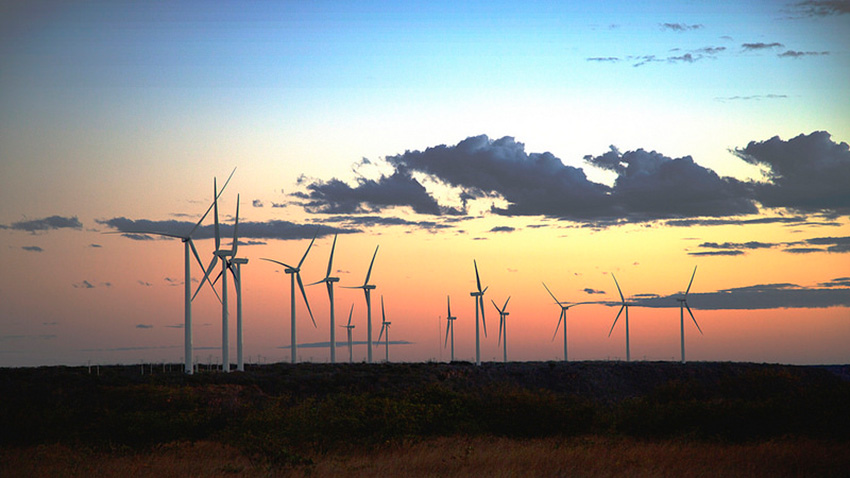
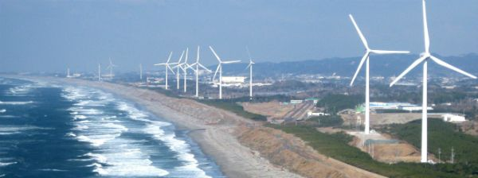

Como funciona a energia eólica
A energia eólica diz respeito à transformação da energia do vento em energia útil, é uma forma de obter energia de forma renovável e limpa, uma vez que, não produz poluentes. A energia eólica é uma fonte de energia que está permanentemente ao dispor do Homem. O vento consiste num fluxo de gases em grande escala, proporcionando variações significativas ao longo do ano. Este movimento do ar em decorrência do aquecimento irregular da atmosfera pela radiação solar pode ser transformado em energia útil. Este processo é conhecido como energia eólica e é usado para produzir energia mecânica através de moinhos de vento, produzir eletricidade ou impulsionar os veleiros através de velas. A energia eólica é renovável, limpa e é uma alternativa aos combustíveis fósseis, estando permanentemente disponível em qualquer região no Mundo.
A energia do vento pode, portanto, ser aproveitada e transformada em energia elétrica e mecânica. Hoje em dia, a energia do vento é essencialmente aproveitada para produzir eletricidade. Esta transformação é conseguida através de aerogeradores. Os aerogeradores são colocados estrategicamente em zonas ventosas, que normalmente são em zonas de maior altitude.
|  |
A energia do vento é transformada em energia elétrica através de um equipamento chamado turbina eólica (ou aerogerador), os quais incluem hélices que se movimentam com a velocidade do vento. Um sistema eólico pode ser usado em três sistemas diferentes: Sistema isolado: sistemas que se encontram privados de energia elétrica proveniente da rede pública, sendo utilizados para abastecer certas regiões. Sistema híbrido: sistemas que produzem energia elétrica em simultâneo com mais de uma fonte, nomeadamente painéis fotovoltaicos ou turbinas eólicas. Sistema interligado à rede: sistemas que inserem a energia produzida por eles mesmos na rede elétrica pública. |
Energia eólica no BrasilO Brasil apresenta uma grande potencial eólico, sobretudo nas regiões sudeste, nordeste e sul do país. Infelizmente, o aproveitamento do seu potencial é pequeno, mas representa uma importante fonte de complementação à energia hidroelétrica, da qual o Brasil é fortemente dependente. Com a criação do Programa de Incentivo às Fontes Alternativas de Energia Elétrica (Proinfa) em 2002, o setor elétrico no Brasil apresentou um rápido crescimento. Este incentivo proporcionou a instalação de novos geradores em diversas locais e, no final de 2006, o país já tinha uma capacidade de produção de 237 MW. No ano 2013, o Brasil encontrava-se na 13ª posição no ranking dos países com maior produção de energia eólica, tendo obtido uma capacidade de 1000 MW em 2011, suficiente para abastecer 400 mil habitações. A grande expetativa no Brasil é que, em 2020, possam ser extraídos cerca de 20 GW. |
 |